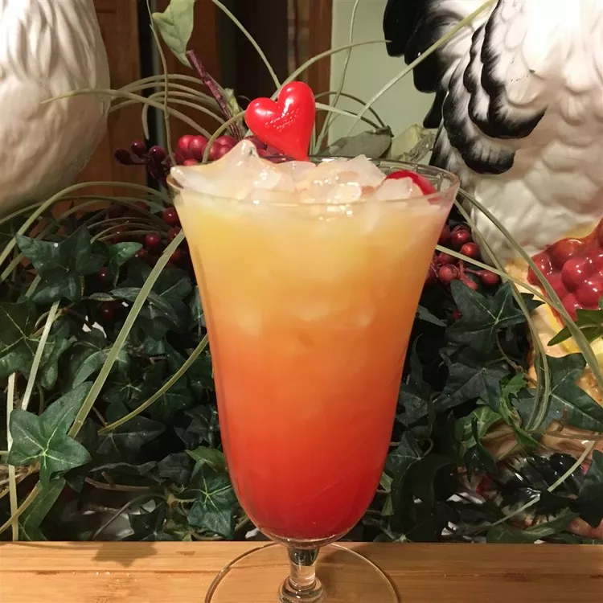

Shirley Temple
Home
All information courtesy of allrecipes

This pomegranate mocktail, with lime juice and grapefruit lime tepache soda, is refreshing and flavorful.
Ingredients
- ½ cup orange juice
- ½ cup lemon-lime flavored carbonated beverage
- 1 tablespoon grenadine syrup
- 1 maraschino cherry
Steps
- Combine orange juice and lemon-lime soda in a tall glass. Pour grenadine in and let it sink to the bottom. Garnish with a maraschino cherry and a straw for stirring.